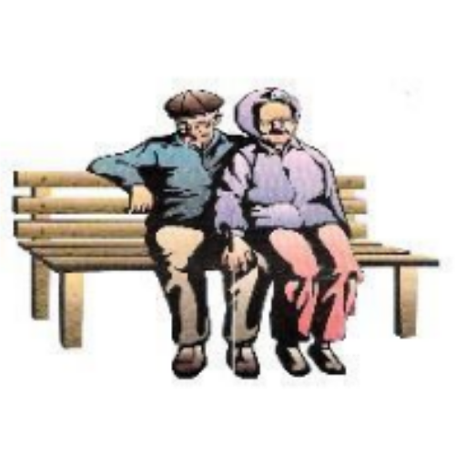

Momentos de nuestra Fundación
Imágenes que cuentan nuestra historia mejor que cualquier palabra.

.jpeg)


.jpeg)
.jpeg)
.jpeg)
.jpeg)


Hogar Centro de Vida
La atención integral que brindamos cubre las necesidades esenciales del adulto mayor: alimentación, salud, educación, recreación y ocupación productiva. Porque creemos que cada abuelo merece vivir con dignidad, alegría y propósito.
Garantizamos una alimentación nutritiva y completa para los abuelos que más lo necesitan.
Atención básica en salud para quienes no tienen acceso a servicios médicos con regularidad.
La edad no es un límite para aprender. Fomentamos la educación y el crecimiento personal en nuestros abuelos.
El bienestar emocional es tan importante como el físico. Creamos momentos de alegría y movimiento.
Los abuelos activos crean con sus manos productos que les generan satisfacción y propósito de vida.
Imágenes que cuentan nuestra historia mejor que cualquier palabra.
Cada almuerzo, cada medicamento, cada taller depende del apoyo de personas como tú.